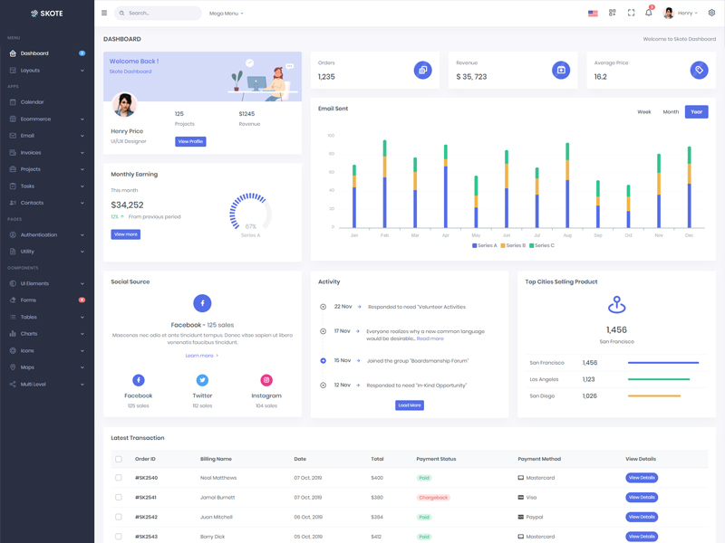
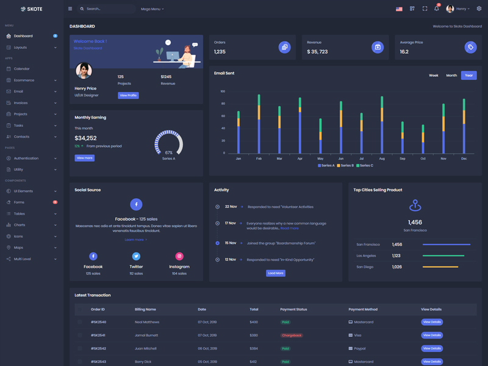
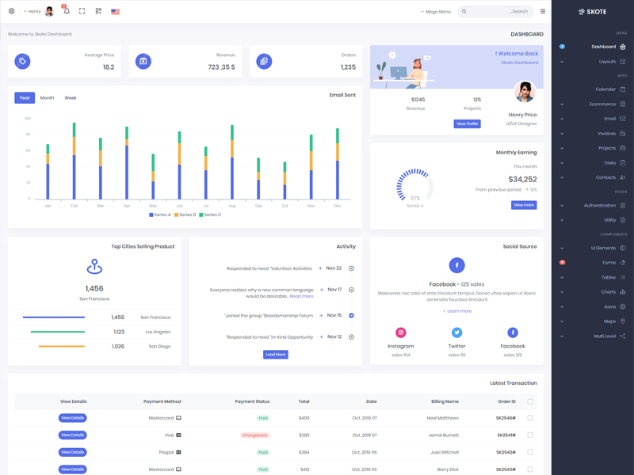

Manual Book / Manual User
Aplikasi E-Konsumsi - Panduan penggunaan aplikasi per role dalam proses bisnis operasional.
Daftar Isi
1. Tujuan & Ruang Lingkup
Dokumen ini membantu user memahami langkah penggunaan aplikasi sesuai role masing-masing. Fokus manual ini adalah alur bisnis event konsumsi, approval bertingkat, pengelolaan stok, dan pengelolaan saldo departemen.
Manual ini disusun berdasarkan implementasi terbaru sistem: kontrol akses role/permission,
validasi approval per departemen dan jabatan, format tanggal Indonesia, serta pemotongan saldo
otomatis saat event ditutup oleh Departemen Umum.


2. Ringkasan Role dan Hak Akses
| Role | Akses Utama | Pembatasan |
|---|---|---|
| Admin | Semua modul (dashboard, user/role/permission, master data, saldo, event). | Tidak ada pembatasan fitur. |
| Manager Departemen | Buat event, approve/reject event Open, lihat riwayat event. | Hanya boleh approve event dari departemen yang sama. |
| Karyawan Pemohon | Buat/edit event (Open/Reject), lihat detail, konfirmasi terima. | Tidak boleh akses Master Data. |
| Karyawan Departemen Umum | Terima dan proses event, konfirmasi kirim (Close by Umum). | Harus role Karyawan, jabatan karyawan, departemen berisi kata "Umum". |
| Manager Departemen Umum | Approve/reject event On Process. | Harus role Manager, jabatan manager, departemen berisi kata "Umum". |
3. Status Event & Arti Proses
| Kode | Status | Diubah Oleh | Keterangan |
|---|---|---|---|
| 1 | Open | Pembuat Event | Event baru dibuat atau diajukan ulang. |
| 2 | Approved VP | Manager Departemen | Event disetujui level departemen. |
| 3 | On Process | Karyawan Dept. Umum | Event diterima untuk diproses. |
| 4 | Approved VP Umum | Manager Dept. Umum | Event disetujui level umum. |
| 5 | Reject | Manager Departemen / Manager Dept. Umum | Event ditolak dan dapat diperbaiki. |
| 6 | Close by Umum | Karyawan Dept. Umum | Makanan dikirim, stok dan saldo dipotong, riwayat log dibuat. |
| 7 | Close by User | Pembuat Event | Pesanan diterima, event selesai final. |


4. Panduan Role Admin
4.1 Tujuan Role
Menjaga konfigurasi sistem, data master, hak akses user, dan saldo departemen tetap valid.
4.2 Langkah Operasional Harian
- Login ke aplikasi menggunakan akun Admin.
- Cek dashboard untuk ringkasan event dan status proses.
- Kelola user, role, permission jika ada perubahan struktur organisasi.
- Kelola master data departemen dan makanan.
- Kelola transaksi saldo (masuk/keluar) dan monitor riwayat log saldo.
- Monitoring event untuk audit status dan log perubahan.
4.3 Kontrol Penting
- Pastikan role user sesuai jabatan aktual (Manager/Karyawan).
- Pastikan user Departemen Umum memiliki jabatan benar agar flow approval berjalan.
- Gunakan log saldo dan status log event sebagai audit trail.
5. Panduan Role Manager Departemen
5.1 Proses Approval Level 1
- Buka menu Event > Seluruh Event.
- Filter status Open.
- Buka detail event.
- Periksa data konsumsi, peserta, tanggal, dan departemen.
- Klik Approve VP jika sesuai, atau Reject jika perlu revisi.
Tombol approve/reject hanya muncul jika event berasal dari departemen Anda.
5.2 Jika Event Ditolak
- Wajib isi alasan reject agar pembuat event tahu perbaikan yang dibutuhkan.
- Setelah pembuat memperbaiki event, status akan kembali ke Open untuk diajukan ulang.
6. Panduan Role Karyawan Pemohon
6.1 Membuat Event Baru
- Buka menu Event > Buat Event Baru.
- Isi informasi event: nama, departemen, tanggal, lokasi, deskripsi.
- Tambahkan makanan dan jumlah (qty).
- Tambahkan peserta event.
- Simpan event, lalu pantau status approval.
6.2 Edit Event
- Event bisa diedit jika status masih Open atau Reject.
- Jika status Reject dan event diedit, status kembali menjadi Open (diajukan ulang).
6.3 Konfirmasi Event Selesai
- Setelah Departemen Umum menutup event ke status Close by Umum, buka detail event.
- Klik Konfirmasi Terima untuk mengubah ke Close by User.
Karyawan tidak memiliki akses ke menu Master Data (Departemen dan Makanan).
7. Panduan Role Karyawan Departemen Umum
7.1 Terima dan Proses Event
- Filter event status Approved VP.
- Buka detail event, lalu klik Terima & Proses.
- Status berubah menjadi On Process.
7.2 Konfirmasi Pengiriman Makanan
- Filter event status Approved VP Umum.
- Buka detail event, lalu klik Konfirmasi Kirim.
- Status berubah ke Close by Umum.
7.3 Dampak Otomatis Sistem
- Stok makanan berkurang sesuai konsumsi event.
- Saldo departemen pemohon terpotong sesuai total biaya event.
- Riwayat log makanan dan log saldo tercatat otomatis.
8. Panduan Role Manager Departemen Umum
8.1 Approval Level 2
- Filter event status On Process.
- Periksa kesiapan event dan data kebutuhan konsumsi.
- Klik Approve VP Umum jika disetujui atau Reject jika perlu perbaikan.
Aksi ini hanya muncul jika user berada di Departemen Umum dan memiliki jabatan manager.
9. Troubleshooting Umum
9.1 Tombol approval tidak muncul
- Periksa role user (Manager/Karyawan) di menu User.
- Periksa
positionpada detail user (manager/karyawan). - Periksa departemen user, khusus flow umum harus departemen berisi kata "Umum".
- Periksa status event, karena tiap aksi hanya aktif di status tertentu.
9.2 Event tidak bisa diproses ke status berikutnya
- Pastikan transisi status valid sesuai flow bisnis.
- Pastikan user yang login adalah pelaku yang berhak untuk status tersebut.
9.3 Saldo tidak cukup saat Close by Umum
- Admin perlu menambah saldo departemen terlebih dahulu di menu Transaksi Saldo.
- Setelah saldo cukup, ulangi proses konfirmasi kirim oleh Karyawan Dept. Umum.